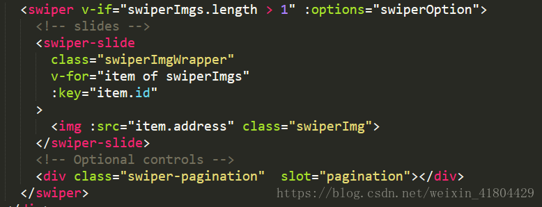
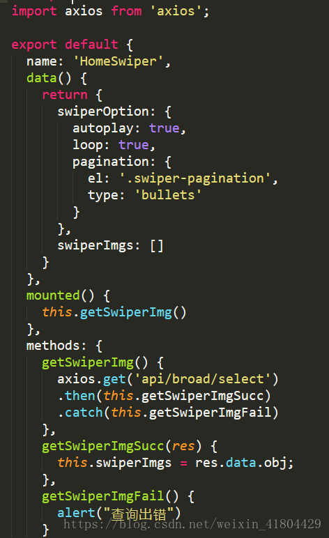

问题缘起 在vue中使用vue-awesome-swiper的时候，踩坑无数，快爬不起来要哭了
算是小问题却搞一下午，心态都崩了呀！
一、关于Swiper Swiper官网
Swiper常用于移动端网站的内容触摸滑动
Swiper 是纯javascript打造的滑动特效插件，面向手机、平板电脑等移动终端。
Swiper 能实现触屏焦点图、触屏Tab切换、触屏多图切换等常用效果。
Swiper 开源、免费、稳定、使用简单、功能强大，是架构移动终端网站的重要选择！
二、Vue-awesome-swiper github传送门/走好
Install 1 2 3 npm install swiper vue-awesome-swiper --save yarn add swiper vue-awesome-swiper
Global Registration 1 2 3 4 5 6 7 8 9 import Vue from 'vue' import VueAwesomeSwiper from 'vue-awesome-swiper' import 'swiper/css/swiper.css' import 'swiper/swiper-bundle.css' Vue.use(VueAwesomeSwiper, )
Local Registration 1 2 3 4 5 6 7 8 9 10 11 12 13 14 import { Swiper, SwiperSlide, directive } from 'vue-awesome-swiper' import 'swiper/css/swiper.css' import 'swiper/swiper-bundle.css' export default { components: { Swiper, SwiperSlide }, directives: { swiper: directive } }
CDN 1 2 3 4 5 6 7 <link rel ="stylesheet" href ="path/to/swiper.css" /> <script type ="text/javascript" src ="path/to/swiper.js" > </script > <script type ="text/javascript" src ="path/to/vue.min.js" > </script > <script type ="text/javascript" src ="path/to/dist/vue-awesome-swiper.js" > </script > <script type ="text/javascript" > Vue.use(window .VueAwesomeSwiper) </script >
Difference with usage Directive and the only difference in the use of the Component:
Other configurations, events are the same.
The effect of the two ways and the difference in the applicable environment is here .
Component 1 2 3 4 5 6 7 8 9 10 11 12 13 14 15 16 17 18 19 20 21 22 23 24 25 26 27 28 29 30 31 32 33 34 35 <template > <swiper ref ="mySwiper" :options ="swiperOptions" > <swiper-slide > Slide 1</swiper-slide > <swiper-slide > Slide 2</swiper-slide > <swiper-slide > Slide 3</swiper-slide > <swiper-slide > Slide 4</swiper-slide > <swiper-slide > Slide 5</swiper-slide > <div class ="swiper-pagination" slot ="pagination" > </div > </swiper > </template > <script > export default { name: 'carrousel' , data() { return { swiperOptions: { pagination: { el: '.swiper-pagination' }, } } }, computed: { swiper() { return this .$refs.mySwiper.$swiper } }, mounted() { console .log('Current Swiper instance object' , this .swiper) this .swiper.slideTo(3 , 1000 , false ) } } </script >
Directive 1 2 3 4 5 6 7 8 9 10 11 12 13 14 15 16 17 18 19 20 21 22 23 24 25 26 27 28 29 30 <template > <div v-swiper:mySwiper ="swiperOption" > <div class ="swiper-wrapper" > <div class ="swiper-slide" :key ="banner" v-for ="banner in banners" > <img :src ="banner" > </div > </div > <div class ="swiper-pagination" > </div > </div > </template > <script > export default { data () { return { banners: [ '/1.jpg' , '/2.jpg' , '/3.jpg' ], swiperOption: { pagination: { el: '.swiper-pagination' }, } } }, mounted() { console .log('Current Swiper instance object' , this .mySwiper) this .mySwiper.slideTo(3 , 1000 , false ) } } </script >
Swiper component API 1 2 3 4 5 6 7 8 9 10 11 12 13 14 15 16 17 18 19 20 21 22 23 24 25 26 27 28 29 30 31 32 33 34 35 36 37 38 39 40 <!-- All events/props support camelCase or kebab-case . --> <swiper :options="swiperOptionsObject" :auto-update="true" :auto-destroy="true" :delete -instance-on-destroy="true" :cleanup-styles-on-destroy="true" @ready ="handleSwiperReadied" @click -slide="handleClickSlide" /> <!-- vue-awesome-swiper converts all Swiper events into component/directive events, e.g.: --> <swiper @slide -change-transition-start="onSwiperSlideChangeTransitionStart" @slideChangeTransitionStart ="onSwiperSlideChangeTransitionStart" @slideChangeTransitionEnd ="..." @transitionStart ="..." ... /> interface IProps { autoUpdate?: boolean autoDestroy?: boolean deleteInstanceOnDestroy?: boolean cleanupStylesOnDestroy?: boolean } function handleSwiperReadied (swiper: Swiper ) console .log('Swiper was munted!' , swiper) } function handleClickSlide (index: number , reallyIndex: number | null ) console .log('Click slide!' , index, reallyIndex) }
Swiper directive API Based on the exact same as the component API.
In the directive mode, the Swiper instance will be mounted in the parent’s component context use the default name$swiper. In order to implement multiple swipers in a context, the directive has an additional name called instanceName API, through this API, you can easily control the name of each swiper mount context.
1 2 3 4 5 6 7 8 9 10 11 12 13 14 <div v-swiper="swiperOptionsObject" /> <div v-swiper:secondSwiper="swiperOptionsObject" /> <div v-swiper:[dynamicSwiperName]="swiperOptionsObject" /> <div v-swiper="swiperOptionsObject" instance-name="fourthSwiper" /> export dafault { data () { return { dynamicSwiperName: 'thirdSwiper' } }, mounted() { console.log('Swiper instances:' , this .$swiper, this .secondSwiper, this .thirdSwiper, this .fourthSwiper) } }
Swiper API Swiper’s API and configuration can be used.
三、巨坑盘点（让我想报复SOCIAL） 1. Swiper滚动失效 对于这个问题，我的理解是：swiper使用版本为 swiper@6.2.0，应该是vue-awesome-swiper和高版本swiper兼容性很差很差
解决方案：
① 卸载已安装的swiper：npm uninstall swiper --save
② 安装低版本swiper，版本号可以去npmjs 搜
③注意到swiper6的样式文件不同，需要按需引入，引入方式同上面的官方引入
2. vue-awesome-swiper使用自动轮播和循环轮播不生效（loop和autoplay） 方法一：
在项目中使用vue-awesome-swiper如果loop和autoplay总是出现各种问题,第一次加载的时候,轮播是不动的,需要重新加载一下swiper才会轮播
解决方案:
1 2 3 4 5 6 7 8 9 10 11 swiperOption: { direction: 'vertical' , observer: true , observeParents: true , loop: true , autoplay: { delay: 2000 , disableOnInteraction: false } }
需要添加上两个属性,这样达到一个初始化swiper的目的
1 2 observer: true ,observeParents: true ,
方法二 ：
如果说轮播数据来自于异步请求，再循环展示，有可能出现轮播失效的问题。
原因是 循环还没有完的时候swiper组件运行冲突出错导致的，在swiper组件上对数据价格v-if就可以解决。代码如下：


3. swiper手动滑动之后自动轮播失效的解决方法 1 2 3 4 5 6 7 8 <script > var mySwiper = new Swiper('.swiper-container' ,{ autoplay: { disableOnInteraction: false , delay:2000, }, }) </script >
用户操作swiper之后，是否禁止autoplay。默认为true：停止。
如果设置为false，用户操作swiper之后自动切换不会停止，每次都会重新启动autoplay。
操作包括触碰，拖动，点击pagination等。
若不生效 ，问题应该依然和swiper版本有关。